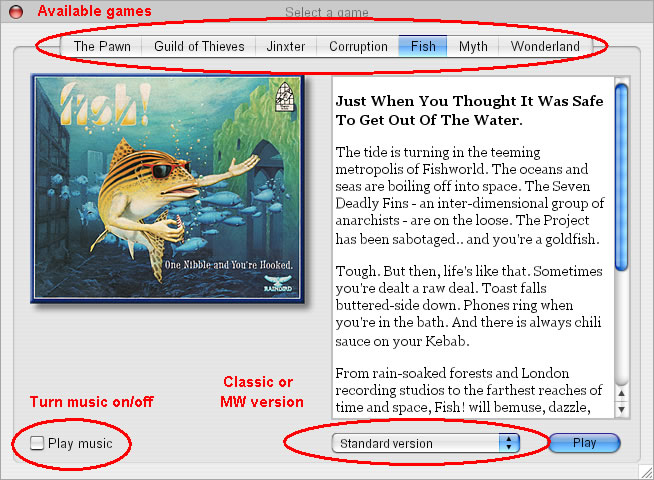
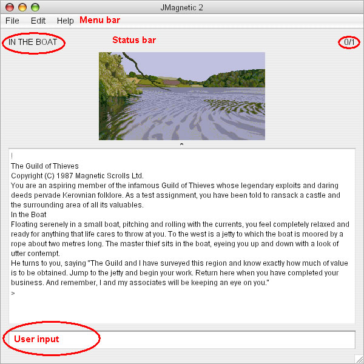
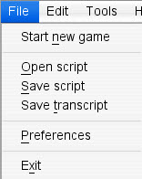
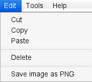
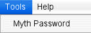
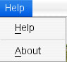

When starting the interpreter it will search the default game files directory for story files and if any are found offer you the following game selection dialog:

Start your desired game by pressing the Play button. Some of the controls are not available for all of the games, e.g. the version selector is only visible for games that have a classic and a Magnetic windows version. If JMagnetic does not find any story files in the gamefiles directory a common file open dialog will open to select a story file manually
After selecting your game the main interpreter window opens and - if available - the title screen of the game is displayed

Please note: Depending on your operating system, the menu bar might be located somewhere else, e.g. on Mac OS X the JMagnetic menu bar will integrate into the system menu bar like native applications. The status bar is only visible for classic Magnetic Scrolls games, the Magnetic Windows games did not use it.
Your commands to the game are entered at the User input field at the bottom of the interpreter window. For general advices on playing text adventure please refer to the various resources in the internet. The usage of the Magnetic Scrolls adventures is explained in the original game manuals that can be found at the Magnetic Scrolls Memorial web site. Some important commands:
| SAVE | stores your game progress to a file for later resuming your game. When playing classic games enter * as filename to open a common file save dialog |
| LOAD | loads a previously save game progress and resumes gaming. When playing classic games enter * as filename to open a common file open dialog |
| QUIT | ends the current session |
| RESTART | restarts the current game |
Additionally there are some special interpreter commands available (mind the leading #):
| #seed | makes games randomness predictable and sets the internal randomiser to a predefined value. This is important when using the scripting feature of JMagnetic to ensure that the game responds equally when creating the script and running the script |
| #undo | Takes back the last game command. Note: The original games do not have an undo feature, so this is to be considered experimental! |
| #logoff | stops scripting |
The menu bar provides access to additional functions:
| File menu | |
 |
Start new game ends the current game session and opens the game selection dialog. Open script opens a file open dialog to select a command input file, which will usually have been produced using the Save script menu item. The game will play back all the commands in the file as if the user had typed them in. Save script opens a file save dialog to select a file to save command input to. This file will contain the text of all commands input by the user. Use the #logoff command to turn recording off. Please note: If you want to play the script later, you should set a specific value for the randomiser with the #seed command. Save transcript opens a file save dialog to select a file to save the script of the current game to. The script contains all text output by the game and commands input by the user. Use the #logoff command to turn scripting off. Preferences open the JMagnetic configuration dialog. Exit exits the interpreter. |
| Edit menu | |
 |
The Edit menu provides access to the standard clipboard and editing functions. You can use it to transfer text between the game output window and the user input field. Save image as PNG stores the active game picture as a PNG graphics file. |
| Tools menu | |
 |
Myth password generates a user/password combination for the owner check in Myth. |
| Help menu | |
 |
Help opens this online help About opens the About dialog, which shows the version number and credits for this version of Windows Magnetic. |